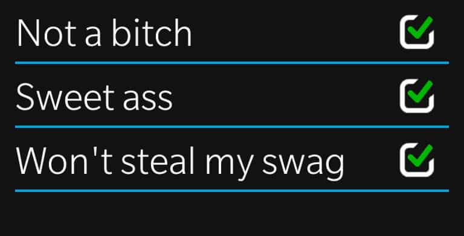

< < < Back
5 Ways To Develop Discipline Instead Of Just “Getting Motivated” – Return Of Kings
It is quite easy to find motivation with our access to the internet. We watch videos of people doing things we could not fathom doing with our own bodies, and we feel a fire in the pit of our stomachs as we imagine how we are about to change our lives to reach peak performance. A few days go by and we stick to our strenuous exercises, looking to someday be in a motivational video of our own.
We lose ourselves in the thoughts of being hard bodies that make other people uncomfortable to be around because of sheer envy. Then starts the second week of your new life, and you decide to take a day off because you’ve earned it. One day turns to two days ,which turns into a week. You are back on your timelines looking for motivation to get back off your couch and lifting weights.
Eh, I’ll start again on Monday.
Motivation cannot change your life alone; it is a catalyst for you to sit down, make a plan, and maintain discipline. That fact alone has changed my life. I could tell you about the many attempts I made to get a physique I could be proud of, only to peter out within two weeks of training. There I would be, with Flamin’ Hot Funyuns residue on my fingertips, contemplating when I would start my regimen again.
The failure we fall into reaches farther than just our bodies. I would start to make time to read more and become more intellectual; again I would find myself watching TV or wasting massive amounts of time on the internet watching pornography or ridiculous compilation videos.
I began to think that the feeling of being a god for two weeks was not enough for me to make a permanent life change; it was because I hardly ever taught myself to be disciplined. I would be satisfied with whatever minor change I made and I would give myself an unwarranted vacation that would last longer than my new activity. Shamefully, I did this countless times throughout my life.
Here are five ways to build a level of discipline that trumps any temporary external motivation:
1. Decide To Consume Fuel For Your Mind And Body
This is what started everything for me. I began to notice how my mood stayed constantly positive when I skipped fast food and instead cooked my own meals. There is a boost to your ego when you start to excel your cooking techniques; you are also more likely to make something that is healthy.
It takes time to cook, so these meals will be small victories on their own, and women like a man who can play with their taste buds in more ways than one.
2. Make Less Time For Things That Keep You In Stasis
There is a reason why many people tell you that a book is better than the movie. Reading lets you learn new words and allows your imagination to stretch, unlike movies and television. At the end of a book, there is a feeling of accomplishment because you have digested somebody’s words and gave them your own interpretation.
This cannot be said for video games and binge watching Netflix. I am not making the claim that it is entirely bad to visually entertain yourself, but you should choose things that will push your brain to consider things you had yet to take in to account.
3. Be Accountable For Yourself

You must be self aware, and know when you deserve a break, and quickly identify the moments you are being lazy. Laziness kills civilizations. If you catch yourself getting out of your new schedule, do not tell yourself you will start over next week. Next week will be too late, and you will definitely regret it. Trust me, you will regret it.
4. Exercise On A Schedule—No Excuses

Start lifting weights; weights that are heavy. Push yourself to failure and live in the beauty that is lactic acid. Run until the moment you feel like you cannot take another pace, and then take another step.
You will be surprised at how much you can actually accomplish and you will scold yourself for not doing this earlier in your life. The only person that is important to impress is yourself. The euphoria will carry on for days and you will go out there and get yourself another fix.
5. You Will Feel Tired; You Will Push Through

You will schedule DESERVED breaks, but you will undoubtedly feel that are not up for being a superhuman on some days. Yet, you will not give in to this urge—instead you will push harder so your body knows that your strong will can punish it for feeling weak. Whenever you feel like you do not want to lift heavy, you will do extra reps in order to kill the weakness that has managed to infiltrate your soul. Success is yours.
Conclusion
Motivation is not all bad; it gives you that fuzzy sensation that tells that you can do whatever you decide to do. This is true, for the most part. Motivation needs to be followed up with discipline. Creating this discipline is how you will become a different being than what you were months ago; you will get the glow everyone is craving for.
If you are not evolving, you are not truly alive.
Read More: Need Motivation? Learn To Meditate


{kind=link}
{kind=link}
{kind=link}
{kind=link}
{kind=link}